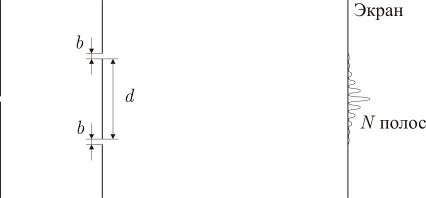

Y14 (2014) — English translation
To assess the degree of monochromaticity of the source emitting in the vicinity of the wave line $\lambda=500~\text{нм}$, a Young interference scheme was used (the distance between the slits in the opaque screen $d=1~\text{cm}$). The observation plane was moved into the Fraunhofer zone. Only bands whose intensity was at least $4\,\%$ the intensity of the zero band were observed visually. It turned out that when the width of the slits changes from $b_1=0.5~\text{мм}$ to $b_2=0.1~\text{мм}$, the number of observed bands increases from $N_1=40$ to $N_2=80$.

Source: https://pho.rs/p/3993